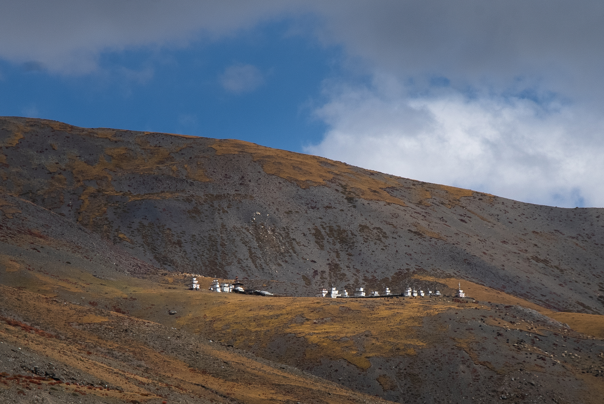

History Of Monastery
དགོན་པའི་ལོ་རྒྱུས།
དོལ་པོ་ཏིང་ཀྱུ་སྡེ་པར་དུས་རབས་བཅུ་བཞིའི་ནང་ཞང་འགྲོ་བའི་མགོན་པོའི་སློབ་རྒྱུད་ཕ་རྒོད་རྟོགས་ལྡན་རྒྱལ་པོས་ཕྱག་བཏབ། དེ་ནས་དུས་རབས་བཅུ་དྲུག་ནང་དུ་གྲྭ་ལུང་རྣམ་གྲོལ་བཟང་པོ་ཞེས་བླ་མ་མཁས་གྲུབ་གཉིས་ལྡན་མཚན་སྙན་ལྡན་པ་ཞིག་བྱོན། རྗེ་བཙུན་ཀུན་དགའ་སྒྲོལ་མཆོག་དང་། དབུས་སྨྱོན་ཧེ་རུ་ཀའམ་ཀུན་དགའ་བཟང་པོ། མངའ་རིས་པཎ་ཆེན་སོགས་སྐྱེས་ཆེན་དུ་མ་ལས་གདམས་པ་མནོས། ཁོང་གི་སློབ་མ་གཙོ་བོ་དམར་སྒོམ་བསོད་ནམས་བློ་གྲོས་དང་ས་དགའ་རབ་འབྱམས་པ་ཆོས་སྐྱོང་རྡོ་རྗེ་སོགས་སྐྱེས་ཆེན་མང་དུ་བྱོན། བཀའ་བརྒྱུད་ཀྱི་ཕྱག་ཆེན་དང་། སྔ་འགྱུར་རྙིང་མའི་རྫོགས་ཆེན། ས་སྐྱའི་ཆོས་སྐོར་སོགས་ཡོངས་རྫོགས་ལ་ཉམས་ལེན་གནང་མཁན་་མང་ཞིང་བསྟན་པ་འགལ་མེད་དུ་མཁྱེན་པའི་བླ་མ་ཚད་ལྡན་དུ་མ་བྱོན་པ་རྣམ་ཐར་ཁག་ལས་གསལ། དུས་རབས་བཅུ་བདུན་དཀྱིལ་ཙམ་ལ་གདན་ས་པ་དགེ་འདུན་བཟང་པོ་བྱོན། དུས་རབས་དེའི་མཇུག་ཙམ་ལ་འབྲུག་པ་བཀའ་བརྒྱུད་ཀྱི་ཆོས་བརྒྱུད་འཛིན་པ་རྗེ་བཙུན་ཕྲིན་ལས་རྡོ་རྗེ་དགོན་འདིར་ཡུལ་དགོན་གྱིས་གདན་དྲངས་ཤིང་བཀའ་རྙིང་གི་ཆོས་སྐོར་བསྐོར་ཅིང་སྐུ་གསུང་ཐུགས་རྟེན་རྣམས་ཉམས་གསོ་མཛད། དུས་རབས་བཅོ་བརྒྱད་ཀྱི་མགོར་གཏེར་སྟོན་གར་དབང་རྡོ་རྗེའི་དངོས་སློབ་རྟ་གྲུ་ཨོ་རྒྱན་བསྟན་འཛིན་དགོན་འདིར་ཕབས་ནས་ཡུན་རིང་བཞུགས་ཏེ་གར་དབང་རྡོ་རྗེའི་གཏེར་ཆོས་ངཙོས་རྡོགས་ཆེན་གྱི་ཆོས་འཁོར་བསྐོར། རྗེ་འཕྲིན་ལས་རྡོ་རྗེ་དང་རྟ་གྲུ་པ་གཉིས་ཀྱི་ཐུགས་སྲས་དགོན་ཁྲོད་ཉི་མ་རྒྱལ་མཚན་གྱིས་ཀྱང་དགོན་འདིར་བཀའ་རྙིང་ཟུང་འབྲེལ་གྱི་སྐོ་ནས་གྲུབ་པ་ཉམས་ལེན་དང་ཆོས་འཁོར་བསྐོར་བ་སོགས་མཛད་འཕྲིན་རྒྱས། ཁོང་གིས་རང་གི་བུ་སློབ་རྣམ་གྲོལ་བཟང་པོའི་དབོན་རྒྱུད་བླ་མ་པདྨ་བསྟན་འཛིན་གདན་ས་པར་བསྐོས། ཡང་དུས་རབས་བཅོ་བརྒྱད་ནང་དུ་རྟ་གྲུ་པའི་རྒྱལ་ཚབ་རིག་འཛིན་རྣམ་རྒྱལ་ཡང་དགོན་འདིར་བཞུགས། བར་སྐབས་ཅུང་ཉམས་དམས་སུ་སོང་བས་དུས་རབས་བཅུ་དགུའི་སྟོད་ལ་རྟ་རབ་མེ་སྐྱེམས་གྲུབ་ཐོབ་ཨོ་རྒྱན་བསྟན་འཛིན་གྱི་དངོས་སློབ་རྣམ་གྲོལ་བཟང་པོའི་དབོན་རྒྱུད་ཏིང་ཀྱུ་ཡུལ་པས་རྟ་རབ་ནས་གདན་དྲངས་ཏེ་གདན་ས་པར་བསྐོས་ཏེ་འཛིན་སྐྱོང་མཛད། རིམ་བཞིན་སྲས་བླ་མ་རྡོ་རྗེའི་སྐབས་དགོན་པ་རྒྱ་བསྐྱེད་གནང་ཞིང་དེའི་སྲས་གྲྭ་ལུང་པ་ཨོ་རྒྱན་རྣམ་གྲོལ་གྱིས་ཀརྨ་པ་མཁའ་ཁྱབ་རྡོ་རྗེ་རྩ་བའི་བླ་མར་བསྟེན་ནས་འཇའ་ཚོན་ཆོས་སྐོར་དཀོན་མཆོག་སྤྱི་འདུས་ཉམས་ལེན་གྱི་མཐིལ་དུ་མཛད་དེ་ཚེ་གང་སྒྲུབ་པ་མཛད། ནང་རྟེན་ལ་རྗེ་གྲྭ་ལུང་རྣམ་གྲོལ་བཟང་པོའི་ཐུགས་ལྗགས་སྤྱན་གསུམ་དང་པྱི་ནང་གི་རྟེན། ལམ་འབྲས་བླ་རྒྱུད་དང་དགོན་པའི་གདན་ས་པ་རྣམས་ཀྱི་འདྲ་སྐུ་སོགས་བཞུགས། ལོ་རེའི་དུས་མཆོད་ཁག་ནི། སྤྲེལ་ཟླའི་ཚེས་བཅུ་ལ་འཇའ་ཚོན་ཞི་ཁྲོ་ངེས་དོན་སྙིང་པོའི་སྒྲུབ་མཆོད་སོགས་ཡོད། ལོ་གསུམ་སྒྲུབ་པ་སོགས་སོ་སོའི་དུས་དང་བསྟུན་ནས་བསྙེན་སྒྲུབ་ལ་གཞོལ་བ་ཡིན།།